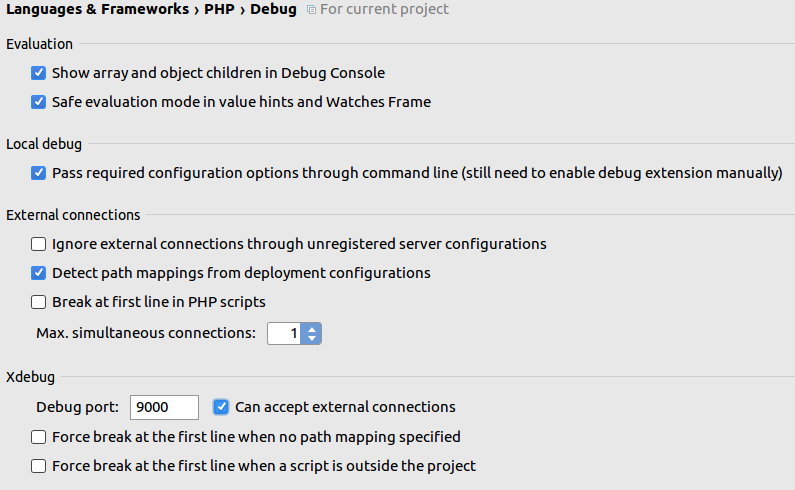
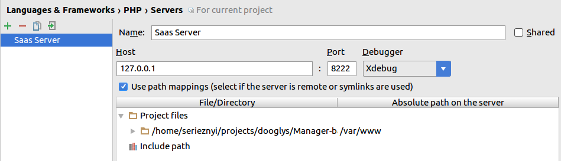
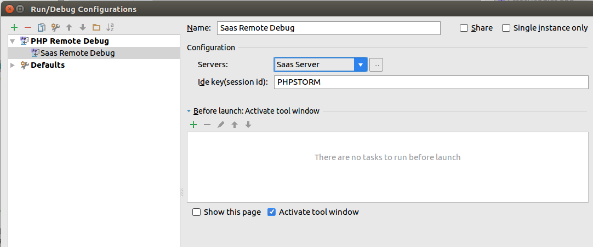

Использование Xdebug в IDE PHPStorm¶
Запускаем приложение в Develop окружении
$ docker-compose up -d
Настраиваем XDebug
Путь File -> Settings -> Languages & Frameworks -> PHP -> Debug
 Настройка XDebug¶
Создаем PHP Remote Debug сервер со следующими параметрами
Путь File -> Settings -> Languages & Frameworks -> PHP -> Servers

Создаем Debug конфигурацию
Путь: Run -> Edit Configurations

5. В файле docker/php/xdebug.ini меняем ip адрес на адрес хостовой машины (для docker-toolbox). Например xdebug.remote_host=192.168.0.102
Linux Выполняем команду ifconfig и смотрим IP адрес хоста docker0
Проблемы¶
1) Если режим Debug останавливается в начале файла, то выключите эту функцию в Run -> Break at first line in PHP Script и убедитесь, что ваш Xdebug настроен как показано на изображении - Настройка XDebug